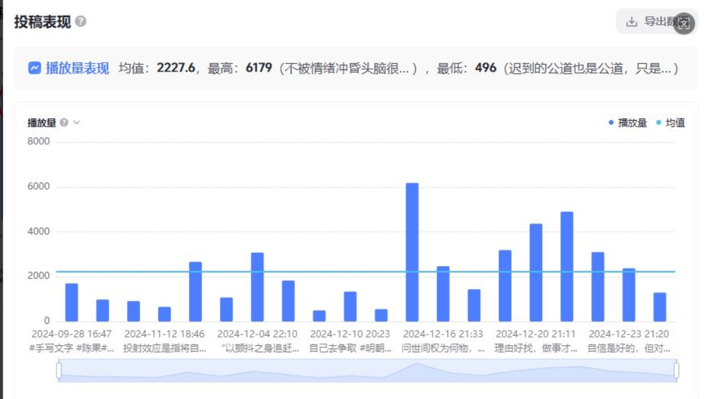

运营课期末作业
从前期调查及方向确定，到具体作品内容呈现，再到数据分析与策略优化的完整实践链路分析

核心实践
完成从0到1的账号定位与内容模板搭建（人物系列化更新+统一视觉风格） 基于抖音创作服务平台数据，完成完播率、跳出率、点赞转化、分享率、评论率的深度复盘 提炼出“前5秒钩子”“时长控制在10-15秒”“精选低门槛内容”等优化策略，形成数据→洞察→行动的完整闭环
“这次运营实践让我重新理解了‘理论’与‘实践’的关系：理论知识不是用来背诵的教条，而是帮助我快速认知未知领域的‘地图’。账号的运营过程，就是把我从课堂上学到的‘用户思维’‘数据分析’‘内容规划’等概念，一步步落到实处的过程。就像竹篮打水——看似一场空，实则篮子已被冲洗得不一样。这份作品集，就是我这个‘竹篮’的可视化呈现。”
执行流程
调查与选择
“在做内容之前，我首先对平台特性进行了分析：短视频占据新媒体市场95.5%的用户规模，抖音月活突破10亿。基于此，我选择抖音作为实践平台，并确定了‘历史类读书分享’的垂直赛道——既结合个人兴趣（熟读《明朝那些事儿》），又兼顾受众广度（历史话题本身不小众，人口基数下‘再小众的东西都很大众’）。”完整的依据个人实际和市场实际进行匹配。
个人模板
“在内容呈现上，我经历了从‘随机发布’到‘系统规划’的迭代： 初期：随意发文字分享，无规划、无更新频率 调整后：以人物为核心进行系列化更新（按时间顺序：朱元璋→朱棣→后续历史人物），每期选取几十到百字的精彩语段，搭配历史感背景图+统一字体+纯音乐《精卫》，形成可复制的模板，保证更新效率和质量稳定性”
数据洞察
对具体的数据表现总结原因提出策略，推动完成新一轮的优化与正向循环。核心优化方向为——开头优化：前5秒直接点明主题+抛出钩子（如‘靖难’理论、‘与朱棣交手’），提升留存率 时长控制：以10-15秒为佳，避免内容过长导致用户流失 内容精选：选取自带情绪张力、不需要背景知识即可理解的片段，降低观看门槛”
查看链接：【金山文档 | WPS云文档】 王诗淇新媒体运营期末作品集
https://www.kdocs.cn/l/cjzbk1MrOvA4